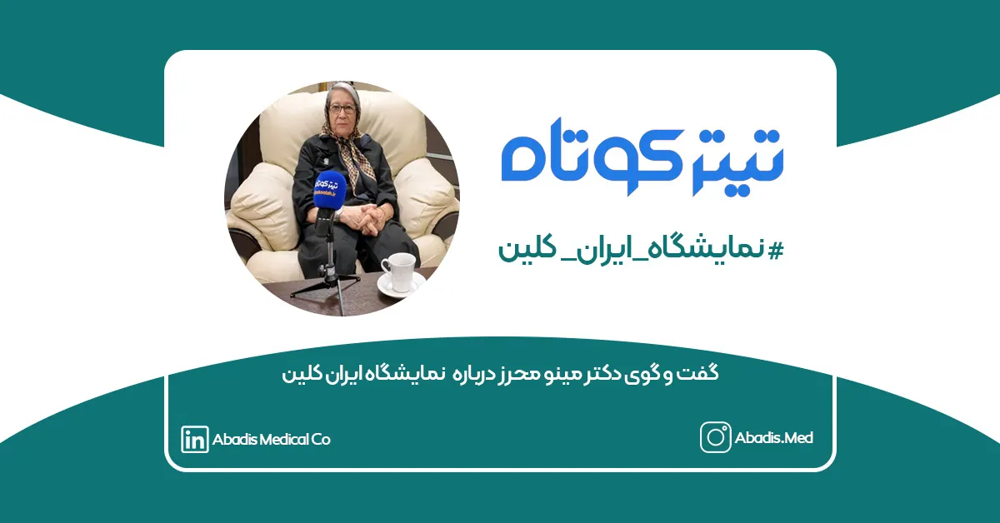

همزمانی نمایشگاه ایران کلین و کنگره کنترل عفونت؛ گامی مؤثر به سوی بیمارستانهای ایمنتر
در گفتوگو با دکتر مینو محرز، متخصص بیماریهای عفونی، اهمیت برگزاری همزمان نمایشگاه ایران کلین و کنگره جامع پیشگیری از عفونتهای بیمارستانی برای ارتقای کیفیت خدمات بهداشتی و کنترل بهتر عفونتها بررسی شد.
دکتر مینو محرز در این گفتگو تاکید کرد: همزمانی برگزاری این دو رویداد فرصتی طلایی برای بهبود کیفیت خدمات درمانی و پیشگیری از عفونتها به ویژه در محیطهای بیمارستانی فراهم میآورد.
او افزود: نادیده گرفتن خطرات عفونتهای بیمارستانی و مصرف بیرویه آنتیبیوتیکها میتواند پیامدهای فاجعهآمیزی برای سلامت عمومی داشته باشد. افزایش مقاومت میکروبی در نتیجه استفاده غیرضروری از آنتیبیوتیکها، درمان عفونتها را دشوارتر میکند و این امر به تهدیدهای جدیتری برای بیماران بهویژه در بیمارستانها منجر میشود. این روند میتواند باعث افزایش مرگومیر ناشی از عفونتهای مقاوم به درمان شود، بهطوریکه حتی عملهای جراحی ساده نیز به خطر بیفتند.
بحرانهای بهداشتی در صورت ادامه روند کنونی
دکتر محرز در ادامه هشدار داد که در صورت عدم اصلاح روندهای درمانی و کنترل عفونتها، شاهد بحرانهای بهداشتی گستردهتری خواهیم بود که فشار مضاعفی بر سیستمهای درمانی و جامعه وارد میآورد.
او گفت: «پیشگیری از عفونت، بهویژه عفونتهای بیمارستانی، از درمان آن مهمتر است. بیمارستانها باید پروتکلهای بهداشتی را به دقت رعایت کنند و مصرف آنتیبیوتیکها به حداقل برساند. برگزاری کنگره جامع پیشگیری از عفونتها کمک خواهد کرد که تمرکز بیشتری بر کنترل عفونتها و پیشگیری از وقوع آنها داشته باشیم تا تنها درمان عفونتها.
افزایش مرگ و میر ناشی از عفونتهای مقاوم به درمان
این متخصص بیماریهای عفونی اضافه کرد: مرگومیر ناشی از عفونتهای مقاوم به درمان به شدت در حال افزایش است. در چنین شرایطی حتی یک عمل جراحی ساده نیز ممکن است به تهدیدی برای جان بیمار تبدیل شود. ما به یک تغییر اساسی در رویکردهای درمانی و رعایت دقیق اصول بهداشتی در بیمارستانها نیاز داریم.
نقش نمایشگاه ایران کلین و کنگره کنترل عفونت در ارتقای بهداشت بیمارستانی
دکتر محرز از برگزاری همزمان نمایشگاه ایران کلین و کنگره جامع پیشگیری از عفونتها ابراز خوشنودی کرد و گفت: «این رویدادها فرصتی مناسب برای معرفی تجهیزات ضدعفونی با کیفیت بالا و تبادل اطلاعات بین تولیدکنندگان و کادر درمانی است. تولیدکنندگان میتوانند نیازهای واقعی پزشکان و پرستاران را شناسایی کرده و محصولات بهتری برای کنترل عفونتها تولید کنند.»
چالش مصرف آنتیبیوتیکها در دامپروری و کشاورزی
وی همچنین به مصرف بیرویه آنتیبیوتیکها در دامپروری و صنعت غذایی اشاره کرد و افزود: مصرف آنتیبیوتیکها در دامها و مواد غذایی نه تنها مقاومت میکروبی را تشدید میکند، بلکه کنترل عفونتها را نیز پیچیدهتر میسازد. این موضوع سلامتی انسانها را تهدید میکند و بر کارایی درمانهای پزشکی تاثیر منفی میگذارد.
دعوت به حضور فعال در کنگره و نمایشگاه ایران کلین
در پایان، دکتر محرز از تمامی پزشکان، متخصصان و فعالان حوزه بهداشت دعوت کرد تا با حضور در نمایشگاه ایران کلین و کنگره جامع پیشگیری از عفونتها، آگاهی خود را در زمینه پیشگیری از عفونتها و کاهش مصرف بیرویه آنتیبیوتیکها افزایش دهند و در راستای ارتقای سلامت جامعه و نسلهای آینده گام بردارند.
برای مطالعه این خبر در رسانه تیتر کوتاه کلیک نمایید.
آبادیس از تمامی پزشکان، متخصصان و فعالان حوزه بهداشت دعوت میکند تا در نمایشگاه ایران کلین و کنگره پیشگیری از عفونتها شرکت کنند. این رویداد فرصتی عالی برای ارتقای آگاهی و افزایش همکاریهای مشترک در جهت بهبود شرایط بهداشتی بیمارستانها و کاهش مصرف آنتیبیوتیکهای غیرضروری است.
با توجه به بحرانهای بهداشتی ناشی از عفونتهای بیمارستانی و مقاومت میکروبی، نیاز به تجهیز بیمارستانها به ابزارهای ضدعفونیکننده با کیفیت بالا بیش از همیشه احساس میشود. شرکت مخازن طبی آبادیس با حضور در نمایشگاه ایران کلین و ارائه کیسه ساکشن یکبار مصرف با کیفیت، به بیمارستانها کمک میکند تا محیطهای درمانی ایمنتر و بهدور از خطرات عفونتها ایجاد کنند.
برای کسب اطلاعات بیشتر درباره محصولات و خدمات ما، به وبسایت شرکت مخازن طبی آبادیس مراجعه فرمایید و در نمایشگاه ایران کلین از نزدیک با راهکارهای بهداشتی و ضدعفونیکنندههای پیشرفته ما آشنا شوید.